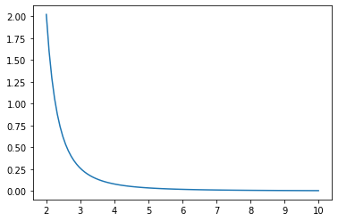

Trapezoid Rule
import numpy as np
import matplotlib.pyplot as plt
Trapezoids
The definite integral of $f(x)$ is equal to the (net) area under the curve $y=f(x)$ over the interval $[a,b]$. Riemann sums approximate definite integrals by using sums of rectangles to approximate the area.
The trapezoid rule gives a better approximation of a definite integral by summing the areas of the trapezoids connecting the points
$$ (x_{i-1},0), (x_i,0), (x_{i-1},f(x_{i-1})), (x_i,f(x_i)) $$
for each subinterval $[x_{i-1},x_i]$ of a partition. Note that the area of each trapezoid is the sum of a rectangle and a triangle
$$ (x_i - x_{i-1}) f(x_{i-1}) + \frac{1}{2}(x_i - x_{i-1}) (f(x_i) - f(x_{i-1})) = \frac{1}{2}(f(x_i) + f(x_{i-1}))(x_i - x_{i-1}) $$
For example, we can use a single trapezoid to approximate:
$$ \int_0^1 e^{-x^2} \, dx $$
First, let's plot the curve $y = e^{-x^2}$ and the trapezoid on the interval $[0,1]$:
x = np.linspace(-0.5,1.5,100)
y = np.exp(-x**2)
plt.plot(x,y)
x0 = 0; x1 = 1;
y0 = np.exp(-x0**2); y1 = np.exp(-x1**2);
plt.fill_between([x0,x1],[y0,y1])
plt.xlim([-0.5,1.5]); plt.ylim([0,1.5]);
plt.show()
Approximate the integral by the area of the trapezoid:
A = 0.5*(y1 + y0)*(x1 - x0)
print("Trapezoid area:", A)
Trapezoid area: 0.6839397205857212
Definition
The trapezoid rule for $N$ subintervals of $[a,b]$ of equal length is
$$ T_N(f) = \frac{\Delta x}{2} \sum_{i=1}^N (f(x_i) + f(x_{i-1})) $$
where $\Delta x = (b - a)/N$ is the length of the subintervals and $x_i = a + i \Delta x$.
Notice that the trapezoid is the average of the left and right Riemann sums
$$ T_N(f) = \frac{\Delta x}{2} \sum_{i=1}^N (f(x_i) + f(x_{i-1})) = \frac{1}{2} \left( \sum_{i=1}^N f(x_i) \Delta x + \sum_{i=1}^N f(x_{i-1}) \Delta x \right) $$
Error Formula
When computing integrals numerically, it is essential to know how good our approximations are. Notice in the theorem below that the error formula is inversely proportional to $N^2$. This means that the error decreases much faster with larger $N$ compared to Riemann sums.
Theorem. Let $T_N(f)$ denote the trapezoid rule
$$ T_N(f) = \frac{\Delta x}{2} \sum_{i=1}^N (f(x_i) + f(x_{i-1})) $$
where $\Delta x = (b-a)/N$ and $x_i = a + i \Delta x$. The error bound is
$$ E_N^T(f) = \left| \ \int_a^b f(x) \ dx - T_N(f) \ \right| \leq \frac{(b-a)^3}{12 N^2} K_2 $$
where $\left| \ f''(x) \, \right| \leq K_2$ for all $x \in [a,b]$.
Implementation
Let's write a function called trapz which takes input parameters $f$, $a$, $b$ and $N$ and returns the approximation $T_N(f)$. Furthermore, let's assign default value $N=50$.
def trapz(f,a,b,N=50):
'''Approximate the integral of f(x) from a to b by the trapezoid rule.
The trapezoid rule approximates the integral \int_a^b f(x) dx by the sum:
(dx/2) \sum_{k=1}^N (f(x_k) + f(x_{k-1}))
where x_k = a + k*dx and dx = (b - a)/N.
Parameters
----------
f : function
Vectorized function of a single variable
a , b : numbers
Interval of integration [a,b]
N : integer
Number of subintervals of [a,b]
Returns
-------
float
Approximation of the integral of f(x) from a to b using the
trapezoid rule with N subintervals of equal length.
Examples
--------
>>> trapz(np.sin,0,np.pi/2,1000)
0.9999997943832332
'''
x = np.linspace(a,b,N+1) # N+1 points make N subintervals
y = f(x)
y_right = y[1:] # right endpoints
y_left = y[:-1] # left endpoints
dx = (b - a)/N
T = (dx/2) * np.sum(y_right + y_left)
return T
Let's test our function on an integral where we know the answer
$$ \int_0^{\pi/2} \sin x \ dx = 1 $$
trapz(np.sin,0,np.pi/2,1000)
0.9999997943832332
Let's test our function again:
$$ \int_0^1 3 x^2 \ dx = 1 $$
trapz(lambda x : 3*x**2,0,1,10000)
1.0000000050000002
And once more:
$$ \int_0^1 x \ dx = \frac{1}{2} $$
trapz(lambda x : x,0,1,1)
0.5
scipy.integrate.trapz
The SciPy subpackage scipy.integrate contains several functions for approximating definite integrals and numerically solving differential equations. Let's import the subpackage under the name spi.
import scipy.integrate as spi
The function scipy.integrate.trapz computes the approximation of a definite by the trapezoid rule. Consulting the documentation, we see that all we need to do it supply arrays of $x$ and $y$ values for the integrand and scipy.integrate.trapz returns the approximation of the integral using the trapezoid rule. The number of points we give to scipy.integrate.trapz is up to us but we have to remember that more points gives a better approximation but it takes more time to compute!
Examples
Arctangent
Let's plot the trapezoids for $\displaystyle f(x)=\frac{1}{1 + x^2}$ on $[0,5]$ with $N=10$.
f = lambda x : 1/(1 + x**2)
a = 0; b = 5; N = 10
# x and y values for the trapezoid rule
x = np.linspace(a,b,N+1)
y = f(x)
# X and Y values for plotting y=f(x)
X = np.linspace(a,b,100)
Y = f(X)
plt.plot(X,Y)
for i in range(N):
xs = [x[i],x[i],x[i+1],x[i+1]]
ys = [0,f(x[i]),f(x[i+1]),0]
plt.fill(xs,ys,'b',edgecolor='b',alpha=0.2)
plt.title('Trapezoid Rule, N = {}'.format(N))
plt.show()
Let's compute the sum of areas of the trapezoids:
T = trapz(f,a,b,N)
print(T)
1.3731040812301096
We know the exact value
$$ \int_0^5 \frac{1}{1 + x^2} dx = \arctan(5) $$
and we can compare the trapezoid rule to the value
I = np.arctan(5)
print(I)
1.373400766945016
print("Trapezoid Rule Error:",np.abs(I - T))
Trapezoid Rule Error: 0.00029668571490626405
Approximate ln(2)
Find a value $N$ which guarantees that the trapezoid rule approximation $T_N(f)$ of the integral
$$ \int_1^2 \frac{1}{x} \, dx = \ln(2) $$
satisfies $E_N^T(f) \leq 10^{-8}$.
For $f(x) = \frac{1}{x}$, we compute $f''(x) = \frac{2}{x^3} \leq 2$ for all $x \in [1,2]$ therefore the error formula implies
$$ \left| \, \int_1^2 \frac{1}{x} \, dx - T_N(f) \, \right| \leq \frac{2}{12N^2} $$
Then $E_N^T \leq 10^{-8}$ is guaranteed if $\frac{1}{6N^2} \leq 10^{-8}$ which implies
$$ \frac{10^4}{\sqrt{6}} \leq N $$
10**4/np.sqrt(6)
4082.4829046386303
We need 4083 subintervals to guarantee $E_N^T(f) \leq 10^{-8}$. Compute the approximation using our own implementation of the trapezoid rule:
approximation = trapz(lambda x : 1/x,1,2,4083)
print(approximation)
0.6931471843089954
We could also use scipy.integrate.trapz to get the exact same result:
N = 4083
x = np.linspace(1,2,N+1)
y = 1/x
approximation = spi.trapz(y,x)
print(approximation)
0.6931471843089955
Let's verify that this is within $10^{-6}$:
np.abs(approximation - np.log(2)) < 10**(-8)
True
Success! However, a natural question arises: what is the actual smallest $N$ such that the trapezoid rule gives the estimate of $\ln (2)$ to within $10^{-8}$?
for n in range(1,4083):
approx = trapz(lambda x : 1/x,1,2,n)
if np.abs(approx - np.log(2)) < 10e-8:
print("Accuracy achieved at N =",n)
break
Accuracy achieved at N = 791
Fresnel Integral
Fresnel integrals are examples of nonelementary integrals: antiderivatives which cannot be written in terms of elementary functions. There are two types of Fresnel integrals:
$$ S(t) = \int_0^t \sin(x^2) dx \ \ \text{and} \ \ C(t) = \int_0^t \cos(x^2) dx $$
Use the trapezoid rule to approximate the Fresnel integral
$$ S(1) = \int_0^1 \sin(x^2) dx $$
such that the error is less than $10^{-5}$.
Compute the derivatives of the integrand
$$ f(x) = \sin(x^2) \ \ , \ \ f'(x) = 2x\cos(x^2) $$
$$ f''(x) = 2\cos(x^2) - 4x^2\sin(x^2) \ \ , \ \ f'''(x) = -12x\sin(x^2) - 8x^3\cos(x^2) $$
Since $f'''(x) \leq 0$ for $x \in [0,1]$, we see that $f''(x)$ is decreasing on $[0,1]$. Values of $f''(x)$ at the endpoints of the interval are
x = 0
2*np.cos(x**2) - 4*x**2*np.sin(x**2)
2.0
x = 1
2*np.cos(x**2) - 4*x**2*np.sin(x**2)
-2.2852793274953065
Therefore $\left| \, f''(x) \, \right| \leq 2.2852793274953065$ for $x \in [0,1]$. Use the error bound formula to find a good choice for $N$
$$ \frac{(b-a)^3}{12 N^2} K_2 \leq 10^{-5} \Rightarrow \sqrt{\frac{10^5(2.2852793274953065)}{12}} \leq N $$
np.sqrt(10**5 * 2.2852793274953065 / 12)
137.9999796949051
Let's compute the integral using the trapezoid rule with $N=138$ subintervals
x = np.linspace(0,1,139)
y = np.sin(x**2)
I = spi.trapz(y,x)
print(I)
0.31027303032220394
Therefore the Fresnel integral $S(1)$ is approximately
$$ S(1) = \int_0^1 \sin(x^2) \, dx \approx 0.310273030322 $$
with error less than $10^{-5}$.
Logarithmic Integral
The Eulerian logarithmic integral is another nonelementary integral
$$ \mathrm{Li}(t) = \int_2^t \frac{1}{\ln x} dx $$
Let's compute $Li(10)$ such that the error is less than $10^{-4}$. Compute derivatives of the integrand
$$ f(x) = \frac{1}{\ln x} \ \ , \ \ f'(x) = -\frac{1}{x(\ln x)^2} \ \ , \ \ f''(x) = \frac{\ln x + 2 }{x^2(\ln x)^3} $$
Plot $f''(x)$ on the interval $[2,10]$.
a = 2
b = 10
x = np.linspace(a,b,100)
y = (np.log(x) + 2) / (x**2 * np.log(x)**3)
plt.plot(x,y)
plt.show()

Clearly $f''(x)$ is decreasing on $[2,10]$ (and bounded below by 0) therefore the absolute maximum occurs at the left endpoint:
$$ \left| \, f''(x) \, \right| \leq \frac{\ln (2) + 2}{4 \ln (2)^3} $$
for $x \in [2,10]$ and we compute
K2 = (np.log(2) + 2)/(4*np.log(2)**3)
print(K2)
2.021732598829855
Use the error formula:
$$ \frac{(b-a)^3}{12 N^2} K_2 \leq 10^{-4} \Rightarrow \frac{8^3}{12 N^2} 2.021732598829855 \leq 10^{-4} \Rightarrow \sqrt{ \frac{8^3 10^4}{12} 2.021732598829855} \leq N $$
np.sqrt(8**3 * 10**4 * 2.021732598829855 / 12)
928.7657986995814
Compute the trapzoid rule with $N=929$
N = 929
x = np.linspace(a,b,N+1)
y = 1/np.log(x)
I = spi.trapz(y,x)
print(I)
5.120442039184057
Therefore the Eulerian logarithmic integral is
$$ \mathrm{Li}(10) = \int_2^{10} \frac{1}{\ln x} dx \approx 5.121065367200469 $$
such that the error is less than $10^{-4}$.
Exercises
Exercise 1. Let $f(x) = x^x$ and note that
$$ f'(x) = x^{x} \left(\log{\left(x \right)} + 1\right) \ , \ f''(x) = x^{x} \left(\log{\left(x \right)} + 1\right)^{2} + x^{x-1} $$
Plot the function $f''(x)$ and use that information to compute $T_N(f)$ for the integral
$$ \int_1^2 x^x \, dx $$
such that $E_N^T(f) \leq 10^{-3}$.
Exercise 2. Consider the integral
$$ \int_0^1 \ln(1+x^2) \, dx $$
and note that
$$ f(x) = \ln(1 + x^2) \hspace{1in} f'(x) = \frac{2x}{1 + x^2} $$ $$ f''(x) = 2 \left( \frac{1 - x^2}{1 + x^2} \right) \hspace{1in} f'''(x) = 4x \frac{x^2 - 3}{(x^2 + 1)^3} $$
Without plotting the functions $f(x)$, $f'(x)$, $f''(x)$ or $f'''(x)$, find a value $N$ such that $E_N^T(f) \leq 10^{-6}$.